Chapter 4 Cluster Analysis - SA Crime dataset
4.2 Exploratory data analysis
This first section prepares the spatial and crime data for clustering.
#setwd("C:/Users/01438475/OneDrive - University of Cape Town/UCTcourses/Honours/Analytics/UnsupervisedLearning/Cluster/crimestats")
###################### DATA ######################
# polygon police
policeboundary = st_read("C:/Users/01438475/OneDrive - University of Cape Town/UCTcourses/Honours/Analytics/UnsupervisedLearning/Cluster/crimestats/station_boundaries_points/station_boundaries/Police_bounds.shp")## Reading layer `Police_bounds' from data source
## `C:\Users\01438475\OneDrive - University of Cape Town\UCTcourses\Honours\Analytics\UnsupervisedLearning\Cluster\crimestats\station_boundaries_points\station_boundaries\Police_bounds.shp'
## using driver `ESRI Shapefile'
## Simple feature collection with 1172 features and 3 fields
## Geometry type: MULTIPOLYGON
## Dimension: XY
## Bounding box: xmin: 16.45189 ymin: -34.83305 xmax: 32.89099 ymax: -22.12503
## Geodetic CRS: WGS 84
# point police
policepoints = st_read("C:/Users/01438475/OneDrive - University of Cape Town/UCTcourses/Honours/Analytics/UnsupervisedLearning/Cluster/crimestats/station_boundaries_points/station_points/Police_points.shp")## Reading layer `Police_points' from data source
## `C:\Users\01438475\OneDrive - University of Cape Town\UCTcourses\Honours\Analytics\UnsupervisedLearning\Cluster\crimestats\station_boundaries_points\station_points\Police_points.shp'
## using driver `ESRI Shapefile'
## Simple feature collection with 1172 features and 5 fields
## Geometry type: POINT
## Dimension: XY
## Bounding box: xmin: 16.49218 ymin: -34.80059 xmax: 32.74348 ymax: -22.34331
## Geodetic CRS: WGS 84
# pop polygon
pop = st_read("C:/Users/01438475/OneDrive - University of Cape Town/ASDA/DataSets/census-2011-population/Census 2011 WardLvl Pop Labour Force_region.shp")## Reading layer `Census 2011 WardLvl Pop Labour Force_region' from data source
## `C:\Users\01438475\OneDrive - University of Cape Town\ASDA\DataSets\census-2011-population\Census 2011 WardLvl Pop Labour Force_region.shp'
## using driver `ESRI Shapefile'
## Simple feature collection with 4277 features and 66 fields
## Geometry type: MULTIPOLYGON
## Dimension: XY
## Bounding box: xmin: 16.45189 ymin: -34.83417 xmax: 32.94498 ymax: -22.12503
## Geodetic CRS: WGS 84pop = pop |> clean_names() |>
mutate(coct = as.numeric(str_sub(ward_id, 1, 3)))
tm_shape(pop)+tm_polygons()

# za boundary
zaboundary = st_read("C:/Users/01438475/OneDrive - University of Cape Town/UCTcourses/Honours/Analytics/UnsupervisedLearning/Cluster/crimestats/zaf_admin_boundaries.shp/zaf_admin4.shp")## Reading layer `zaf_admin4' from data source
## `C:\Users\01438475\OneDrive - University of Cape Town\UCTcourses\Honours\Analytics\UnsupervisedLearning\Cluster\crimestats\zaf_admin_boundaries.shp\zaf_admin4.shp'
## using driver `ESRI Shapefile'
## Simple feature collection with 4392 features and 39 fields
## Geometry type: MULTIPOLYGON
## Dimension: XY
## Bounding box: xmin: 16.45189 ymin: -34.83417 xmax: 32.94498 ymax: -22.12503
## Geodetic CRS: WGS 84
# ward boundary
wardsboundary = st_read("C:/Users/01438475/OneDrive - University of Cape Town/UCTcourses/Honours/Analytics/UnsupervisedLearning/Cluster/crimestats/Wards/Wards.shp")## Reading layer `Wards' from data source
## `C:\Users\01438475\OneDrive - University of Cape Town\UCTcourses\Honours\Analytics\UnsupervisedLearning\Cluster\crimestats\Wards\Wards.shp'
## using driver `ESRI Shapefile'
## Simple feature collection with 116 features and 5 fields
## Geometry type: MULTIPOLYGON
## Dimension: XY
## Bounding box: xmin: 2037950 ymin: -4077020 xmax: 2115607 ymax: -3958026
## Projected CRS: WGS 84 / Pseudo-Mercator
# crime df
crime2025 <- read_excel("C:/Users/01438475/OneDrive - University of Cape Town/UCTcourses/Honours/Analytics/UnsupervisedLearning/Cluster/crimestats/crime2025.xlsx", sheet = "Sheet5")
head(crime2025)## # A tibble: 6 × 10
## `Row Labels` Assault with the intent to…¹ `Attempted murder` `Common assault`
## <chr> <dbl> <dbl> <dbl>
## 1 Albertinia 19 1 37
## 2 Ashton 23 1 27
## 3 Athlone 46 25 137
## 4 Atlantis 51 12 341
## 5 Barrydale 20 0 23
## 6 Beaufort West 89 5 164
## # ℹ abbreviated name:
## # ¹`Assault with the intent to inflict grievous bodily harm`
## # ℹ 6 more variables: `Common robbery` <dbl>, Murder <dbl>,
## # `Robbery with aggravating circumstances` <dbl>, `Sexual offences` <dbl>,
## # district <chr>, province <chr>crime2025 = crime2025 |> clean_names()
crime2025 <- crime2025 |>
mutate(name = str_to_sentence(str_to_lower(row_labels)))
# match with police points
policepoints <- policepoints |>
mutate(name = str_to_sentence(str_to_lower(compnt_nm)))
policeboundary <- policeboundary |>
mutate(name = str_to_sentence(str_to_lower(compnt_nm)))
final_boundary <- policeboundary |>
left_join(crime2025, by = "name")
final_points <- policepoints |>
left_join(crime2025, by = "name")
head(final_points)## Simple feature collection with 6 features and 16 fields
## Geometry type: POINT
## Dimension: XY
## Bounding box: xmin: 25.52347 ymin: -33.84109 xmax: 27.62384 ymax: -29.2362
## Geodetic CRS: WGS 84
## compnt_nm location_x location_y create_dt version name row_labels
## 1 BOTSHABELO 26.71606 -29.23620 20251205 1.4.2 Botshabelo <NA>
## 2 KHUBUSIDRIFT 27.62384 -32.56819 20251205 1.4.2 Khubusidrift <NA>
## 3 STUTTERHEIM 27.42741 -32.57118 20251205 1.4.2 Stutterheim <NA>
## 4 MOTHERWELL 25.58419 -33.79664 20251205 1.4.2 Motherwell <NA>
## 5 KWADWESI 25.52347 -33.84109 20251205 1.4.2 Kwadwesi <NA>
## 6 NXUBA 25.62571 -32.17560 20251205 1.4.2 Nxuba <NA>
## assault_with_the_intent_to_inflict_grievous_bodily_harm attempted_murder
## 1 NA NA
## 2 NA NA
## 3 NA NA
## 4 NA NA
## 5 NA NA
## 6 NA NA
## common_assault common_robbery murder robbery_with_aggravating_circumstances
## 1 NA NA NA NA
## 2 NA NA NA NA
## 3 NA NA NA NA
## 4 NA NA NA NA
## 5 NA NA NA NA
## 6 NA NA NA NA
## sexual_offences district province geometry
## 1 NA <NA> <NA> POINT (26.71606 -29.2362)
## 2 NA <NA> <NA> POINT (27.62384 -32.56819)
## 3 NA <NA> <NA> POINT (27.42741 -32.57118)
## 4 NA <NA> <NA> POINT (25.58419 -33.79664)
## 5 NA <NA> <NA> POINT (25.52347 -33.84109)
## 6 NA <NA> <NA> POINT (25.62571 -32.1756)


final_pointsCoCT = final_points |> filter(district=="City of Cape Town District")
tm_shape(final_pointsCoCT)+tm_dots(fill = "sexual_offences")


intersections = st_intersects(final_pointsCoCT, popCoct)
final_pointsCoCT$population <- popCoct[unlist(intersections), "pop",
drop = TRUE] # drop geometry
final_pointsCoCT## Simple feature collection with 63 features and 17 fields
## Geometry type: POINT
## Dimension: XY
## Bounding box: xmin: 18.34645 ymin: -34.19313 xmax: 18.86941 ymax: -33.56479
## Geodetic CRS: WGS 84
## First 10 features:
## compnt_nm location_x location_y create_dt version name
## 1 RONDEBOSCH 18.46833 -33.96262 20251205 1.4.2 Rondebosch
## 2 MUIZENBERG 18.46663 -34.10872 20251205 1.4.2 Muizenberg
## 3 LWANDLE 18.86718 -34.11561 20251205 1.4.2 Lwandle
## 4 SAMORA MACHEL 18.57275 -34.01742 20251205 1.4.2 Samora machel
## 5 PHILIPPI 18.54054 -34.00107 20251205 1.4.2 Philippi
## 6 HARARE 18.66930 -34.05193 20251205 1.4.2 Harare
## 7 KLEINVLEI 18.71879 -33.98820 20251205 1.4.2 Kleinvlei
## 8 STRAND 18.83286 -34.11592 20251205 1.4.2 Strand
## 9 LINGELETHU-WEST 18.66004 -34.04298 20251205 1.4.2 Lingelethu-west
## 10 MOWBRAY 18.47228 -33.95012 20251205 1.4.2 Mowbray
## row_labels assault_with_the_intent_to_inflict_grievous_bodily_harm
## 1 Rondebosch 0
## 2 Muizenberg 20
## 3 Lwandle 86
## 4 Samora Machel 59
## 5 Philippi 47
## 6 Harare 107
## 7 Kleinvlei 96
## 8 Strand 26
## 9 Lingelethu-West 53
## 10 Mowbray 3
## attempted_murder common_assault common_robbery murder
## 1 0 8 3 0
## 2 14 103 31 22
## 3 22 111 20 26
## 4 9 38 13 18
## 5 16 122 24 31
## 6 13 160 16 36
## 7 27 303 61 25
## 8 3 129 21 5
## 9 14 185 30 25
## 10 0 7 6 0
## robbery_with_aggravating_circumstances sexual_offences
## 1 5 5
## 2 57 9
## 3 87 38
## 4 88 22
## 5 40 22
## 6 139 72
## 7 115 27
## 8 35 21
## 9 153 30
## 10 11 0
## district province geometry
## 1 City of Cape Town District Western Cape POINT (18.46833 -33.96262)
## 2 City of Cape Town District Western Cape POINT (18.46663 -34.10872)
## 3 City of Cape Town District Western Cape POINT (18.86718 -34.11561)
## 4 City of Cape Town District Western Cape POINT (18.57275 -34.01742)
## 5 City of Cape Town District Western Cape POINT (18.54054 -34.00107)
## 6 City of Cape Town District Western Cape POINT (18.6693 -34.05193)
## 7 City of Cape Town District Western Cape POINT (18.71879 -33.9882)
## 8 City of Cape Town District Western Cape POINT (18.83286 -34.11592)
## 9 City of Cape Town District Western Cape POINT (18.66004 -34.04298)
## 10 City of Cape Town District Western Cape POINT (18.47228 -33.95012)
## population
## 1 23734
## 2 24489
## 3 39177
## 4 43695
## 5 46151
## 6 28971
## 7 41077
## 8 33367
## 9 34699
## 10 33076The main statistical issue is that crime counts are not directly comparable across police areas because each area has a different population size. Therefore, we convert selected crime counts into rates per 100k people.
For police area \(i=1,\ldots,N\) and crime type \(j=1,\ldots,P\), define
\[ \text{Rate}_{ij}=\frac{X_{ij}}{Pop_i}\times 100{,}000, \]
where \(X_{ij}\) is the observed number of crimes of type \(j\) (variable) in area \(i\), and \(Pop_i\) is the population assigned to that police area. This standardises crime counts across areas of different sizes in terms of population. Allows fair comparison between, say Khayelitsha (very large population) and Albertinia (small population). The clustering dataset can therefore be written as
\[ \mathbf{X^*}=\begin{bmatrix} x^*_{11} & x^*_{12} & \cdots & x^*_{1p}\\ x^*_{21} & x^*_{22} & \cdots & x^*_{2p}\\ \vdots & \vdots & \ddots & \vdots\\ x^*_{n1} & x^*_{n2} & \cdots & x^*_{np} \end{bmatrix}, \]
where each row is a police station area and each column is a crime-rate variable (\(X^*\)).
Key takeaway: We should not cluster directly on raw crime counts because high-population areas may appear as high-crime areas simply because more people live there.
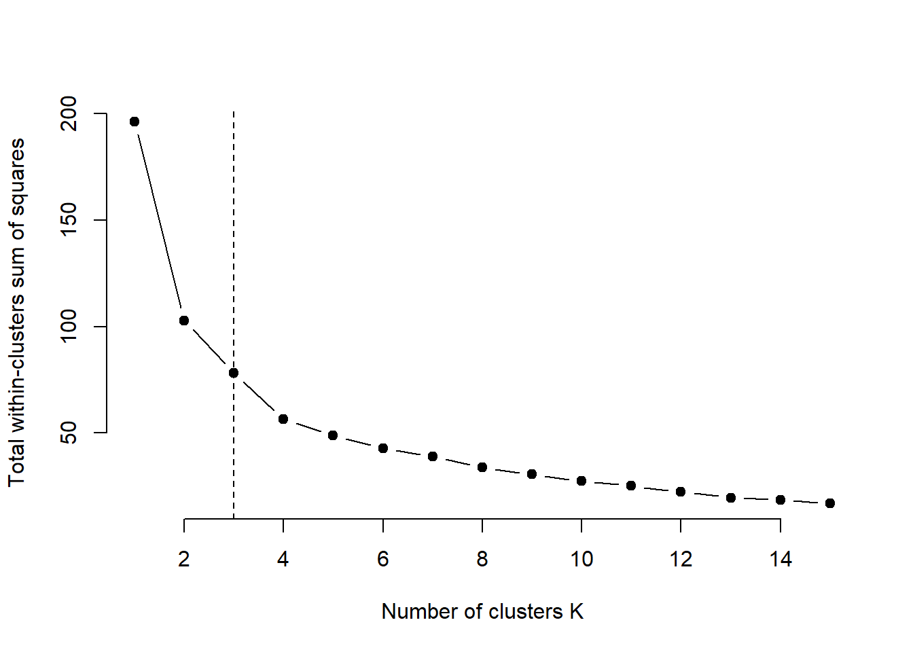
final_pointsCoCT = final_pointsCoCT |>
mutate(assault_per100k = assault_with_the_intent_to_inflict_grievous_bodily_harm*100000/population,
attempted_murder_per100k = attempted_murder*100000/population,
common_assault_per100k = common_assault*100000/population,
common_robbery_per100k = common_robbery*100000/population,
murder_per100k = murder*100000/population,
robbery_per100k = robbery_with_aggravating_circumstances*100000/population,
sexual_offences_per100k = sexual_offences*100000/population)
tm_shape(final_pointsCoCT)+tm_dots(fill = "assault_per100k")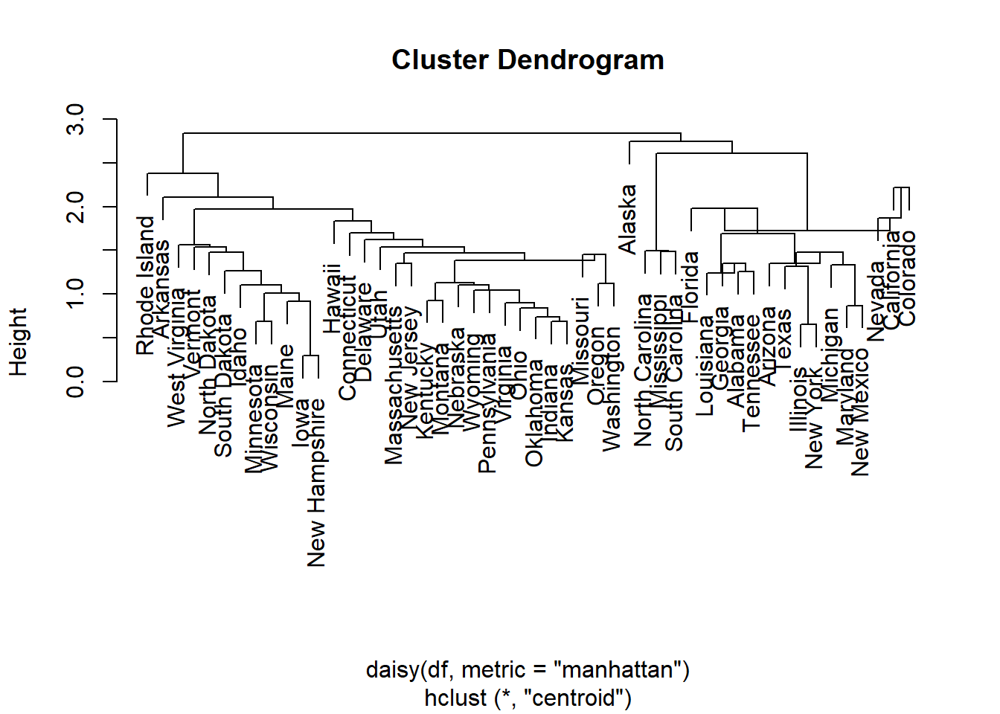
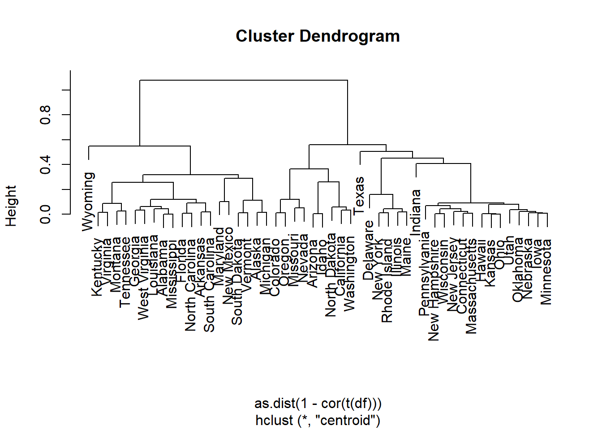


4.2.1 Examine the correlations
Before clustering, we examine the spatial distribution of crime variables and the relationships among the crime-rate variables. This helps us understand whether clustering is likely to reveal meaningful structure.
The exploratory questions are:
- Do crime rates vary spatially across police areas?
- Are some crime types strongly correlated?
- Is dimension reduction useful before clustering?
The sample correlation between crime variables \(j\) and \(k\) is
\[ r_{jk}=\frac{\sum_{i=1}^{n}(x_{ij}-\bar{x}_j)(x_{ik}-\bar{x}_k)} {\sqrt{\sum_{i=1}^{n}(x_{ij}-\bar{x}_j)^2}\sqrt{\sum_{i=1}^{n}(x_{ik}-\bar{x}_k)^2}}. \]
The full correlation matrix is
\[ \mathbf{R}=\left(r_{jk}\right)_{p\times p}. \]
Strong positive correlations suggest that some crimes tend to be high in the same areas. This can lead to redundancy in the clustering variables and motivates the use of PCA.
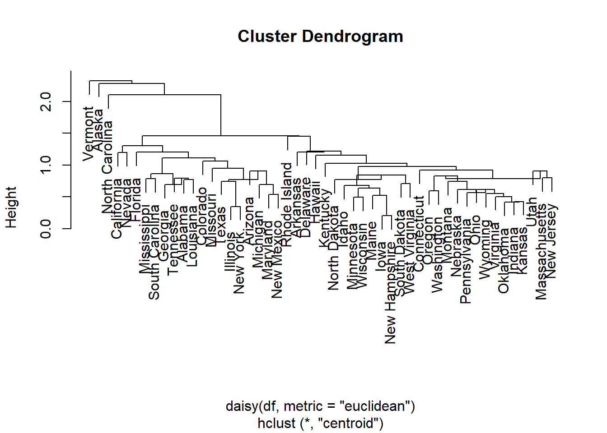
4.2.2 Perform Principal Component Analysis (PCA)
Principal component analysis (PCA) transforms the original variables into uncorrelated linear combinations. PCA is a way to summarise the main directions of variation before or alongside clustering.
## Warning in geom_bar(stat = "identity", fill = barfill, color = barcolor, :
## Ignoring empty aesthetic: `width`.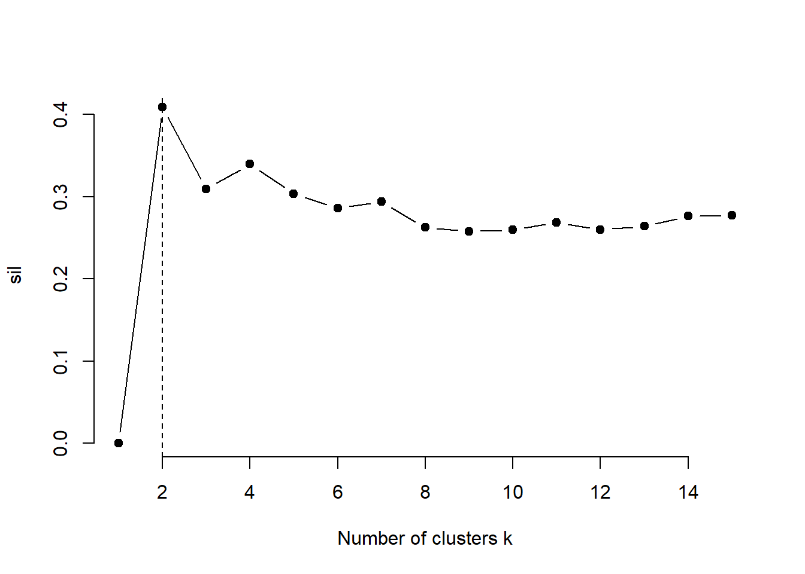
## Warning: Using `size` aesthetic for lines was deprecated in ggplot2 3.4.0.
## ℹ Please use `linewidth` instead.
## ℹ The deprecated feature was likely used in the ggpubr package.
## Please report the issue at <https://github.com/kassambara/ggpubr/issues>.
## This warning is displayed once every 8 hours.
## Call `lifecycle::last_lifecycle_warnings()` to see where this warning was
## generated.## Warning: `aes_string()` was deprecated in ggplot2 3.0.0.
## ℹ Please use tidy evaluation idioms with `aes()`.
## ℹ See also `vignette("ggplot2-in-packages")` for more information.
## ℹ The deprecated feature was likely used in the factoextra package.
## Please report the issue at <https://github.com/kassambara/factoextra/issues>.
## This warning is displayed once every 8 hours.
## Call `lifecycle::last_lifecycle_warnings()` to see where this warning was
## generated.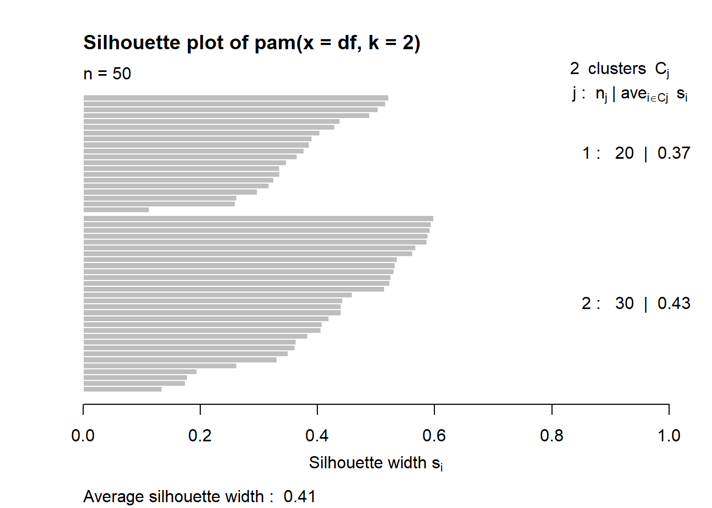
4.2.3 Extract PCA scores
The PCA scores are the coordinates of each observation in the new principal-component space. If most variation is captured by the first two components, then plotting PC1 against PC2 gives a useful low-dimensional view of the data. These scores are useful for visualising clusters found by algorithms such as k-means.
pca <- prcomp(clustervars[,2:8], scale. = TRUE, center = TRUE)
pca_scores <- as.data.frame(pca$x)
biplot(pca)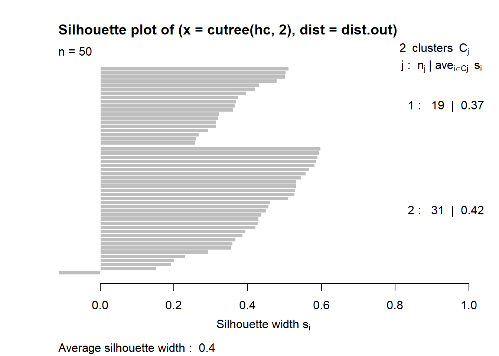
## Importance of components:
## PC1 PC2 PC3 PC4 PC5 PC6 PC7
## Standard deviation 2.2421 0.9536 0.72301 0.52131 0.33804 0.30030 0.25456
## Proportion of Variance 0.7181 0.1299 0.07468 0.03882 0.01632 0.01288 0.00926
## Cumulative Proportion 0.7181 0.8480 0.92271 0.96154 0.97786 0.99074 1.000004.3 Cluster Analysis
Cluster analysis aims to divide the \(n\) police areas into groups that are internally similar and externally different. A clustering solution with \(K\) groups can be written as
\[ C=\{C_1,C_2,\ldots,C_K\}, \]
where each \(C_k\) is a cluster and every observation belongs to one cluster.
The broad goal is:
\[ \text{high similarity within clusters, and low similarity between clusters.} \]
In this lecture, we compare centroid-based K-means, density-based, medoid-based and hierarchical clustering approaches.
Firstly, we define which variables will be used for cluster analysis:
K-means is sensitive to scaling and initial starting values, which is why the data are standardised and nstart is used.
4.3.1 Kmeans
K-means partitions the data into \(K\) clusters by minimising the within-cluster sum of squares:
\[ W_K=\sum_{k=1}^{K}\sum_{i\in C_k}\|\mathbf{x}_i-\boldsymbol{\mu}_k\|^2, \]
where \(\boldsymbol{\mu}_k\) is the centroid of cluster \(k\):
\[ \boldsymbol{\mu}_k=\frac{1}{|C_k|}\sum_{i\in C_k}\mathbf{x}_i. \]
The algorithm alternates between two steps:
- Assignment step: assign each observation to its nearest centroid.
\[ C_k=\left\{i: \|\mathbf{x}_i-\boldsymbol{\mu}_k\|^2 \leq \|\mathbf{x}_i-\boldsymbol{\mu}_\ell\|^2, \; \forall \ell\right\}. \]
Therefore, \(C_k\)th cluster is made up of all \(i\)th observations that are assigned to \(k\)th cluster since the distance to \(k\)th cluster is the shortest.
- Update step: recompute each centroid using the observations assigned to that cluster.
4.3.1.1 Kmeans with 2 clusters
set.seed(123)
km2 <- kmeans(as.data.frame(data), 2, nstart = nstart)
# k-means group number of each observation
km2$cluster## 1 2 3 4 5 6 7 8 9 10 11 12 13 14 15 16 17 18 19 20 21 22 23 24 25 26
## 1 1 1 1 1 2 2 1 2 1 1 1 1 2 1 1 2 1 2 1 1 2 1 1 1 1
## 27 28 29 30 31 32 33 34 35 36 37 38 39 40 41 42 43 44 45 46 47 48 49 50 51 52
## 1 1 1 2 1 2 1 2 2 2 2 1 2 1 1 1 1 2 2 1 2 1 1 1 1 1
## 53 54 55 56 57 58 59 60 61 62 63
## 1 1 1 1 1 1 1 2 1 2 14.3.1.1.1 Visualise on the map
Mapping the cluster labels allows us to assess whether the clusters have a spatial pattern. Although k-means does not explicitly use spatial adjacency here, nearby police areas may still fall into similar clusters if their crime-rate profiles are similar.
final_pointsCoCT$cluster2 = as.factor(km2$cluster)
tm_shape(final_pointsCoCT)+tm_dots(fill = "cluster2")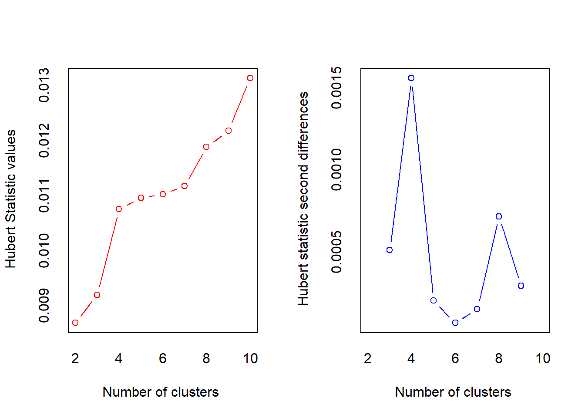
clustervector = factor(km2$cluster)
crime_kmeans <- clustervars[,2:8] |>
mutate(cluster = factor(km2$cluster))
fviz_cluster(
km2,
data = data,
geom = "point"
#ellipse.type = "norm"
)
## Importance of components:
## PC1 PC2 PC3 PC4 PC5 PC6 PC7
## Standard deviation 2.2421 0.9536 0.72301 0.52131 0.33804 0.30030 0.25456
## Proportion of Variance 0.7181 0.1299 0.07468 0.03882 0.01632 0.01288 0.00926
## Cumulative Proportion 0.7181 0.8480 0.92271 0.96154 0.97786 0.99074 1.000004.3.1.1.2 Cluster Profiling
After clustering, we summarise the variables within each cluster. For cluster \(k\) and variable \(j\), the cluster mean is
\[ \bar{x}_{kj}=\frac{1}{n_k}\sum_{i\in C_k}x_{ij}, \]
where \(n_k=|C_k|\).
These profiles help us move from a numerical cluster label such as “Cluster 1” to a substantive interpretation such as “high violent-crime-rate cluster” or “lower crime-rate cluster”.
crime_kmeans |>
group_by(cluster) |>
summarise(
n = n(),
mean_assault = mean(assault_per100k, na.rm = TRUE),
mean_attmurder = mean(attempted_murder_per100k, na.rm = TRUE),
mean_comassault = mean(common_assault_per100k, na.rm = TRUE),
mean_commrobb = mean(common_robbery_per100k, na.rm = TRUE),
mean_robb = mean(robbery_per100k, na.rm = TRUE),
mean_murder = mean(murder_per100k, na.rm = TRUE),
mean_sexual = mean(sexual_offences_per100k, na.rm = TRUE)
)## # A tibble: 2 × 9
## cluster n mean_assault mean_attmurder mean_comassault mean_commrobb
## <fct> <int> <dbl> <dbl> <dbl> <dbl>
## 1 1 44 68.6 19.2 197. 64.8
## 2 2 19 313. 72.2 677. 232.
## # ℹ 3 more variables: mean_robb <dbl>, mean_murder <dbl>, mean_sexual <dbl># or simply
class.means <- apply(clustervars[,2:8], 2,
function(x)
tapply (x, clustervector, mean))
class.means## assault_per100k attempted_murder_per100k common_assault_per100k
## 1 68.61626 19.16964 196.9548
## 2 312.53703 72.22646 676.7743
## common_robbery_per100k murder_per100k robbery_per100k sexual_offences_per100k
## 1 64.82612 15.8700 95.21795 30.45958
## 2 232.25331 108.1782 441.52001 121.54682plot (c(1,ncol(data)),range(class.means),type="n",xlab="",ylab="Average proportion of protein intake",xaxt="n")
axis (side=1, 1:ncol(data), colnames(data), las=2)
#ensure you list enough colours for the number of clusters
colvec <- c("blue","red")
for (i in 1:nrow(class.means))
lines (1:ncol(data),class.means[i,],col=colvec[i])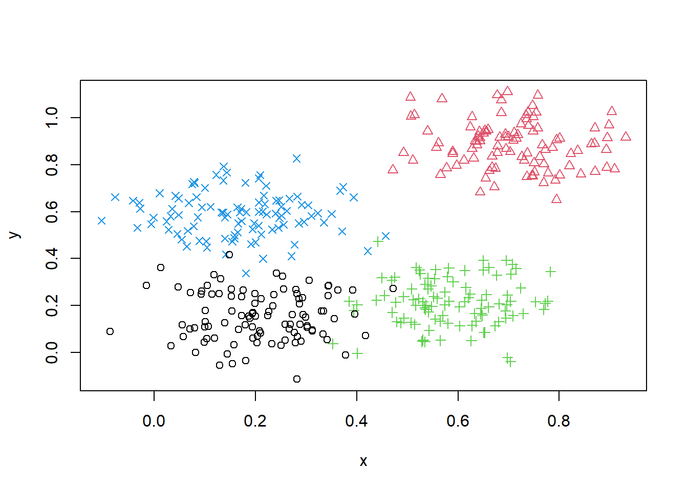
4.3.1.2 Kmeans with 3 Clusters
Increasing the number of clusters allows more detailed profiles. For \(K=3\), the objective becomes
\[ W_3=\sum_{k=1}^{3}\sum_{i\in C_k}\|\mathbf{x}_i-\boldsymbol{\mu}_k\|^2. \]
Compared with \(K=2\), this may split a broad high-crime or low-crime group into more nuanced subgroups.
4.3.1.2.1 Visualise on the map
final_pointsCoCT$cluster3 = as.factor(km3$cluster)
tm_shape(final_pointsCoCT)+tm_dots(fill = "cluster3")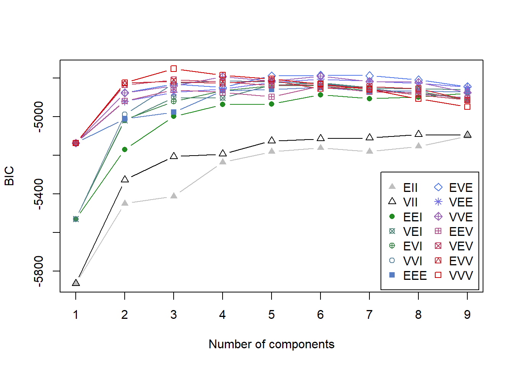
4.3.1.2.2 Visualise on 2D
pca_scores$cluster = as.factor(km3$cluster)
ggplot(pca_scores, aes(x= PC1, y=PC2, colour = cluster))+geom_point()## Warning: <ggplot> %+% x was deprecated in ggplot2 4.0.0.
## ℹ Please use <ggplot> + x instead.
## This warning is displayed once every 8 hours.
## Call `lifecycle::last_lifecycle_warnings()` to see where this warning was
## generated.
4.3.2 DBSCAN
DBSCAN defines clusters as dense regions of points separated by sparse regions. It depends on two parameters: \(\varepsilon\) and MinPts.
The \(\varepsilon\)-neighbourhood of observation \(i\) is
\[ N_\varepsilon(i)=\{j: d(\mathbf{x}_i,\mathbf{x}_j)\leq \varepsilon\}. \]
A point is a core point if
\[ |N_\varepsilon(i)|\geq \text{MinPts}. \]
A point is a border point if it is not a core point but lies within the \(\varepsilon\)-neighbourhood of a core point. A point is labelled as noise if it is neither a core point nor a border point.
DBSCAN is useful when clusters are irregularly shaped and when outliers are meaningful. In crime analysis, the “noise” points may themselves be interesting unusual police areas.
# add long-lat as well
spatial_data <- final_pointsCoCT |>
st_drop_geometry()|>
select(c(6,2,3,18:24))
#minPts = dim+1 = 9+1
# We inspect the k-NN distance plot for k = minPts - 1
kNNdistplot(scale(spatial_data[,-1]), minPts = 9)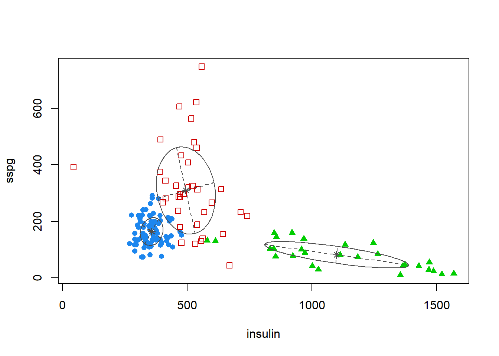
db <- fpc::dbscan(scale(spatial_data[,-1]), eps = 3.5, MinPts = 10)
spatial_data <- spatial_data |>
mutate(spatial_cluster = factor(db$cluster))
ggplot(spatial_data, aes(x = location_x,
y = location_y,
colour = spatial_cluster)) +
geom_point(alpha = 0.7, size = 2) +
coord_equal() +
theme_minimal() +
labs(
title = "Spatial DBSCAN clusters of crime data",
colour = "Cluster"
)

4.3.3 PAM
PAM is a k-medoids method. Unlike k-means, which represents each cluster by a centroid, PAM represents each cluster by an actual observed data point called a medoid.
The objective is
\[ \min_{m_1,\ldots,m_K}\sum_{k=1}^{K}\sum_{i\in C_k}d(\mathbf{x}_i,\mathbf{m}_k), \]
where \(\mathbf{m}_k\) is the medoid of cluster \(k\).
PAM is usually more robust to outliers than k-means because medoids are actual observations rather than averages.
## 1 2 3 4 5 6 7 8 9 10 11 12 13 14 15 16 17 18 19 20 21 22 23 24 25 26
## 1 2 2 1 1 2 2 1 2 1 1 1 1 2 1 1 2 1 2 1 1 2 1 1 1 1
## 27 28 29 30 31 32 33 34 35 36 37 38 39 40 41 42 43 44 45 46 47 48 49 50 51 52
## 1 1 1 2 1 2 1 2 2 2 2 2 2 1 2 1 1 2 2 1 2 1 1 1 1 1
## 53 54 55 56 57 58 59 60 61 62 63
## 1 1 1 1 2 1 1 2 1 2 14.3.4 CLARA
CLARA extends PAM by applying k-medoids to several subsamples and then assigning all observations to their nearest medoids. For a given set of medoids, the average cost is
\[ \frac{1}{n}\sum_{i=1}^{n}\min_{k=1,\ldots,K}d(\mathbf{x}_i,\mathbf{m}_k). \]
CLARA is mainly used when PAM becomes computationally expensive.
clarax <- clara(data, 2, samples=10)
# Silhouette plot
plot(silhouette(clarax), col = 2:3, main = "Silhouette plot") ### K-medoids
### Hierarchical
### K-medoids
### Hierarchical
Hierarchical clustering creates a sequence of nested partitions. Agglomerative hierarchical clustering starts with each observation in its own cluster and repeatedly merges the two closest clusters.
At the start:
\[ \mathcal{C}^{(0)}=\{\{1\},\{2\},\ldots,\{n\}\}. \]
At each step, the two closest clusters are merged according to a linkage rule. #### Computing pairwise distance matrices
Most clustering methods require a measure of dissimilarity. For Euclidean distance,
\[ d_{ii'}=\|\mathbf{x}_i-\mathbf{x}_{i'}\|=\sqrt{\sum_{j=1}^{P}(x_{ij}-x_{i'j})^2}. \]
The distance matrix is
\[ \mathbf{D}=\left(d_{ii'}\right)_{n\times n}. \]
4.3.4.1 Single linkage
Single linkage defines the distance between two clusters as the minimum pairwise distance:
\[ d(A,B)=\min_{i\in A, i'\in B}d(i,i'). \]
This method can detect elongated clusters, but it is prone to chaining.
out.single.euc <- hclust(daisy(data,metric="euclidean"),method="single")
# try other metric="euclidean"
plot(out.single.euc)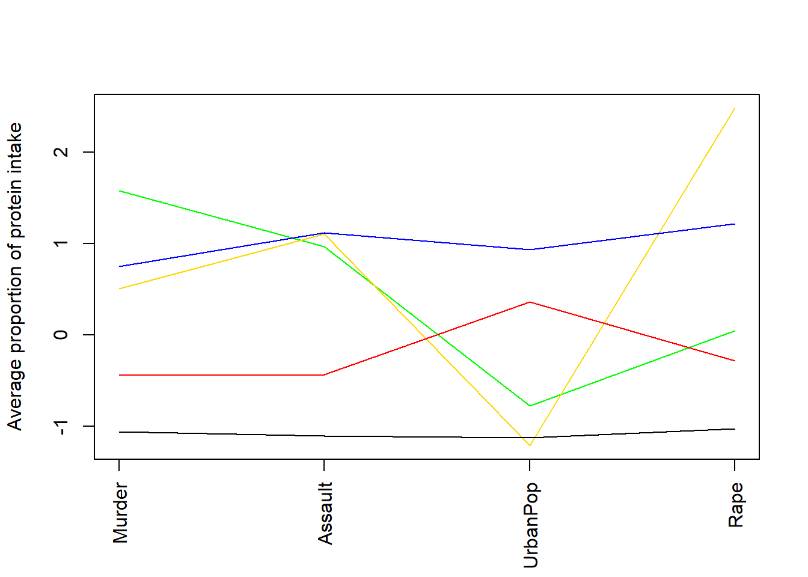
4.3.4.1.1 Cut the tree
# decide to cut the tree at height 1.5
out.single.euc <- cutree(out.single.euc, h=1.5)
# view cluster allocation
names (out.single.euc) <- rownames(data)
sort(out.single.euc)## 1 2 3 4 5 7 8 9 10 11 12 13 15 16 18 19 20 21 23 24 25 26 27 28 29 30
## 1 1 1 1 1 1 1 1 1 1 1 1 1 1 1 1 1 1 1 1 1 1 1 1 1 1
## 31 33 38 40 41 42 43 46 48 49 50 51 52 53 54 55 56 57 58 59 60 61 63 6 35 14
## 1 1 1 1 1 1 1 1 1 1 1 1 1 1 1 1 1 1 1 1 1 1 1 2 2 3
## 22 17 32 39 34 36 37 44 45 47 62
## 3 4 5 5 6 7 8 9 10 11 124.3.4.2 Complete linkage
Complete linkage defines the distance between two clusters as the maximum pairwise distance:
\[ d(A,B)=\max_{i\in A, i'\in B}d(i,i'). \]
This tends to produce compact clusters.
hc <- hclust(dist.out, method = "complete")
plot(hc, labels = F,-1)
rect.hclust(hc, k = 2, border = 2:3) # Add rectangle around 2 clusters, try with 3?
4.3.4.3 Centroid method
Centroid linkage uses the distance between cluster centroids:
\[ d(A,B)=\|\boldsymbol{\mu}_A-\boldsymbol{\mu}_B\|. \]
where
\[ \boldsymbol{\mu}_A=\frac{1}{|A|}\sum_{i\in A}\mathbf{x}_i. \]
# Centroid clustering
out.centroid.euc <- hclust(daisy(data,metric="euclidean"),method="centroid")
plot(out.centroid.euc)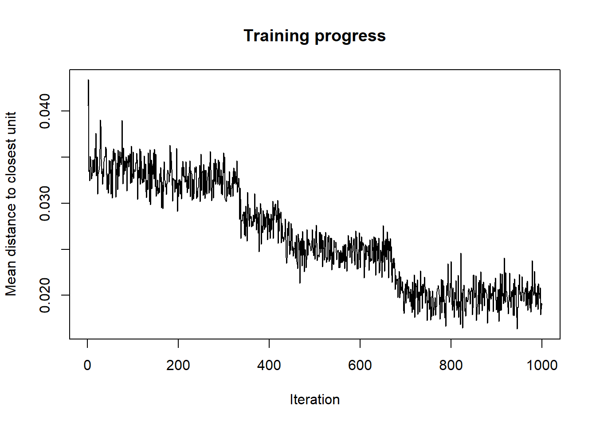
4.3.4.4 Different distance measures
Different distance measures can lead to different cluster structures. This is important because clustering is not only about the algorithm; it also depends strongly on how similarity is defined.
4.3.4.4.1 Manhattan distance
Manhattan distance is
\[ d_{ii'}=\sum_{j=1}^{p}|x_{ij}-x_{i'j}|. \]
It is less dominated by large squared differences than Euclidean distance.
out.centroid.city <- hclust(daisy(data,metric="manhattan"),method="centroid")
plot(out.centroid.city)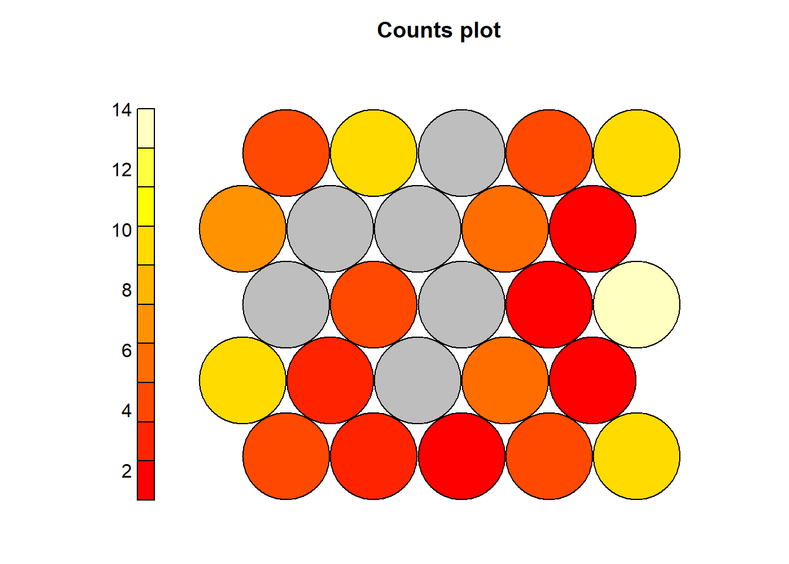
4.4 Internal validation: assessing cluster quality without external labels
Internal validation uses only the data and the cluster allocation to assess whether the clustering solution is compact and well separated.
4.4.1 Manual calculations from first principles
4.4.1.1 Within-cluster sum of squares
For a fixed number of clusters \(K\), the within-cluster sum of squares is
\[ W_K=\sum_{k=1}^{K}\sum_{i\in C_k}\|\mathbf{x}_i-\boldsymbol{\mu}_k\|^2. \]
For \(K=1\), all observations belong to one cluster, so
\[ W_1=\sum_{i=1}^{n}\|\mathbf{x}_i-\bar{\mathbf{x}}\|^2. \]
As \(K\) increases, \(W_K\) decreases monotonically. The elbow method looks for the point after which increasing \(K\) gives only small improvements.
4.4.1.1.1 Manual
source("C:/Users/01438475/OneDrive - University of Cape Town/UCTcourses/Honours/Analytics/UnsupervisedLearning/Cluster/crimestats/within_variation_calc.R")
cluster = km2$cluster
# different number of clusters:
totwithinss = NA
wss0 <- sum(rowSums((sweep(data, 2, colMeans(data), "-"))^2))
totwithinss[1] = wss0
for (k in 2:10){
km <- kmeans(data, centers = k, nstart = nstart)
cluster = km$cluster
totwithinss[k]= within_variation_manual(data, cluster)$total_within_variation
}
wss_df <- data.frame(
k = 1:10,
WSS = totwithinss
)
ggplot(wss_df, aes(x = k, y = WSS)) +
geom_line() +
geom_point(size = 3) +
scale_x_continuous(breaks = 1:10) +
labs(
title = "Elbow Plot for K-means Clustering",
x = "Number of clusters (K)",
y = "Total within-cluster sum of squares"
) +
theme_minimal()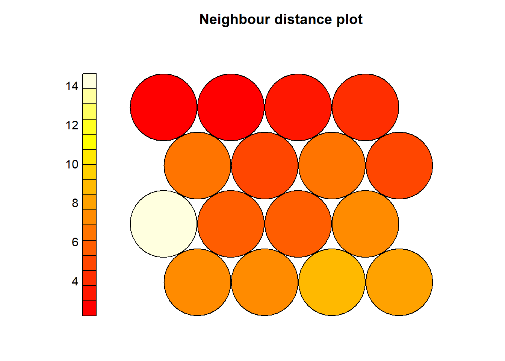
4.4.1.1.2 Using R function
## Warning: The `size` argument of `element_line()` is deprecated as of ggplot2 3.4.0.
## ℹ Please use the `linewidth` argument instead.
## ℹ The deprecated feature was likely used in the ggpubr package.
## Please report the issue at <https://github.com/kassambara/ggpubr/issues>.
## This warning is displayed once every 8 hours.
## Call `lifecycle::last_lifecycle_warnings()` to see where this warning was
## generated.## Warning: The `size` argument of `element_rect()` is deprecated as of ggplot2 3.4.0.
## ℹ Please use the `linewidth` argument instead.
## ℹ The deprecated feature was likely used in the ggpubr package.
## Please report the issue at <https://github.com/kassambara/ggpubr/issues>.
## This warning is displayed once every 8 hours.
## Call `lifecycle::last_lifecycle_warnings()` to see where this warning was
## generated.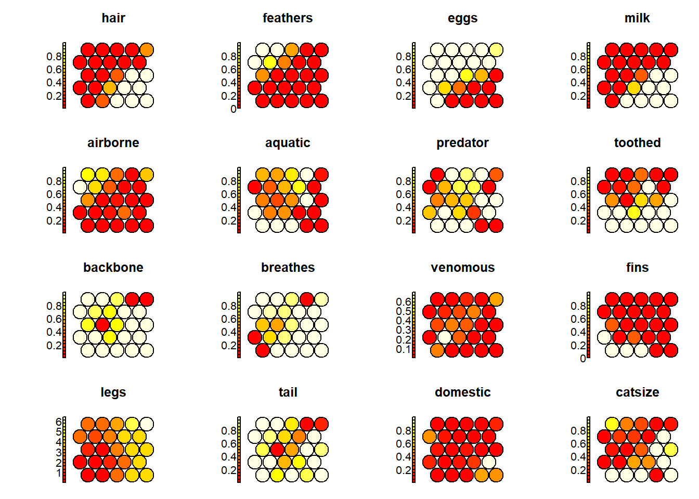
4.4.1.2 Silhouette width
For observation \(i\), let \(a(i)\) be the average distance from \(i\) to all other observations in its own cluster, and let \(b(i)\) be the smallest average distance from \(i\) to observations in another cluster.
The silhouette width is
\[ s(i)=\frac{b(i)-a(i)}{\max\{a(i),b(i)\}}. \]
Interpretation:
- \(s(i)\approx 1\): well assigned;
- \(s(i)\approx 0\): lies between clusters;
- \(s(i)<0\): may be assigned to the wrong cluster.
The average silhouette width is
\[ \bar{s}=\frac{1}{n}\sum_{i=1}^{n}s(i). \]
4.4.1.2.1 Manual
source("C:/Users/01438475/OneDrive - University of Cape Town/UCTcourses/Honours/Analytics/UnsupervisedLearning/Cluster/crimestats/silhoutte_score_calc.R")
sil.manual = manual_silhouette(data,km2$cluster)
mean(sil.manual$silhouette)## [1] 0.504938sil.df <- as.data.frame(sil.manual[, 1:3])
colnames(sil.df) <- c("observation", "cluster", "silhouette_width")
ggplot(sil.df, aes(
x = reorder(observation, silhouette_width),
y = silhouette_width,
fill = as.factor(cluster)
)) +
geom_col(show.legend = TRUE) +
coord_flip() +
labs(
title = "Silhouette Plot",
x = "Observations",
y = "Silhouette width",
fill = "Cluster"
) +
theme_minimal()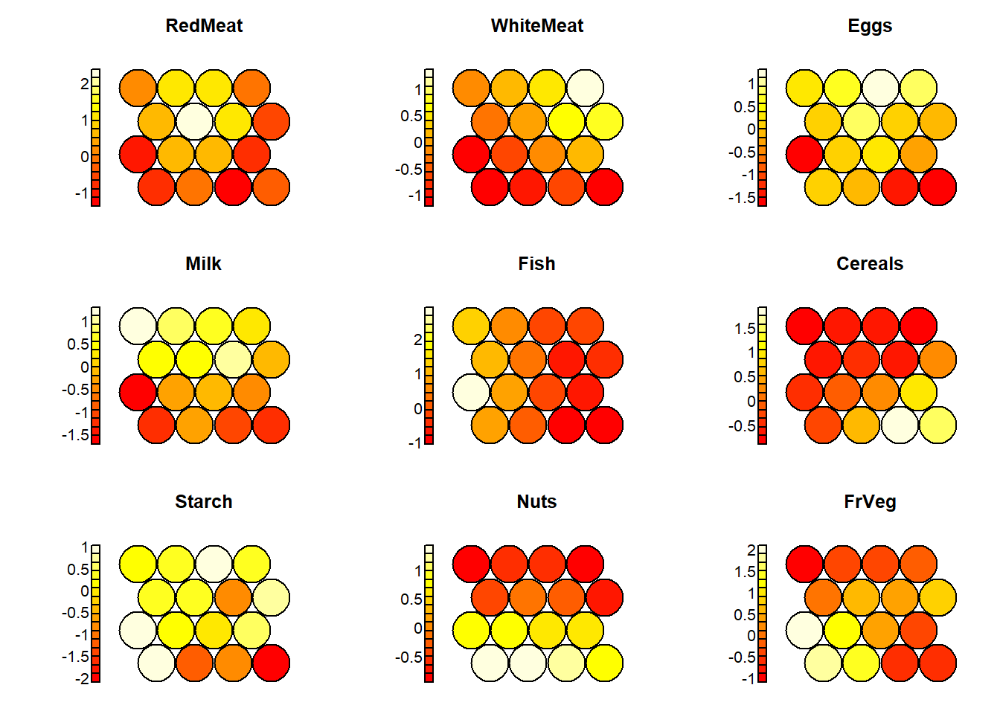
For silhouette, choose the K with the largest average silhouette width
4.4.1.2.2 Using the cluster results
## [1] 0.504938k.max <- 10
sil <- rep(0, k.max)
# Compute the average silhouette width for
# k = 2 to k = 10
for(i in 2:k.max){
km.res <- kmeans(data, centers = i, nstart = 50)
ss <- silhouette(km.res$cluster, dist(data))
sil[i] <- mean(ss[, 3])
}
# Plot the average silhouette width
plot(1:k.max, sil, type = "b", pch = 19,
frame = FALSE, xlab = "Number of clusters k")
abline(v = which.max(sil), lty = 2)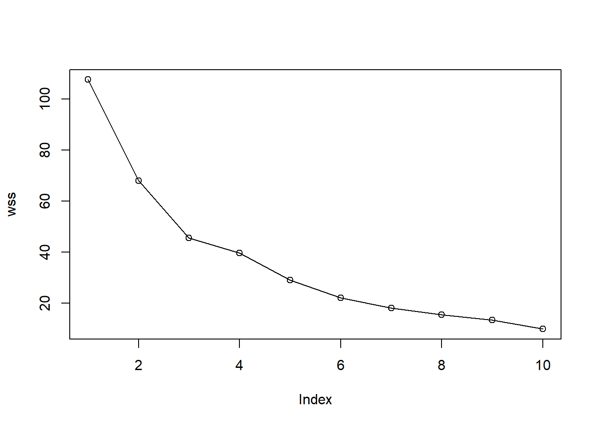
4.4.1.2.3 Using R function
############ built in R code ##############
library(cluster)
fviz_nbclust(data, kmeans, method = "silhouette") +
labs(title = "Average silhouette method")
avg.sil <- numeric(9)
for (k in 2:10) {
km <- kmeans(data, centers = k, nstart = 50)
sil <- silhouette(km$cluster, dist(data))
avg.sil[k] <- mean(sil[, 3])
}
plot(
1:10, avg.sil[1:10],
type = "b",
pch = 19,
xlab = "Number of clusters (K)",
ylab = "Average silhouette width",
main = "Average Silhouette Method"
)
4.4.1.3 Gap statistics
The gap statistic compares the observed within-cluster variation with what would be expected under a reference distribution with no cluster structure.
For \(K\) clusters,
\[ \operatorname{Gap}(K)=E^*\{\log(W_K^*)\}-\log(W_K), \]
where \(W_K\) is the observed within-cluster variation and \(W_K^*\) is the within-cluster variation from simulated reference datasets.
A common decision rule is to choose the smallest \(K\) such that
\[ \operatorname{Gap}(K)\geq \operatorname{Gap}(K+1)-s_{K+1}. \]
Unlike WSS, we do not simply choose the largest gap value. We look for the smallest number of clusters after which improvement becomes small relative to uncertainty.
4.4.1.3.1 Using R function
set.seed(123)
gap <- clusGap(
data,
FUNcluster = kmeans,
K.max = 10,
B = 100,
nstart = 25
)
plot(gap, main = "Gap Statistic for K-means")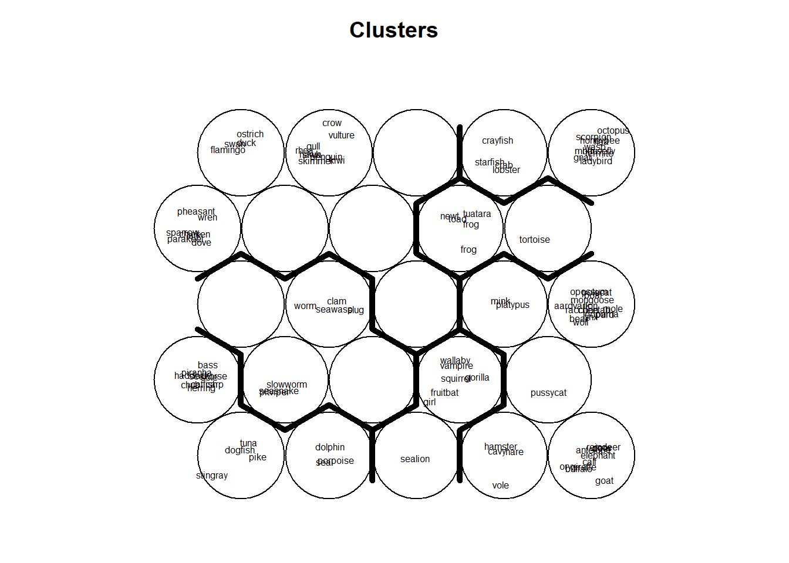
Here, red bars show the simulation uncertainty (standard error), points are the estimated gap. Unlike WSS and Sil, we don’t choose the max. You choose the smallest K where the gain levels off.
What we see here is a big jump from K=1 to K=2, moderate increase up to K=3,4. After that, increases are gradual from K ≥ 6, improvements are very small relative to uncertainty. So we are looking for the point where, adding another cluster does not give a statistically meaningful improvement. In this one there is a big improvement from K = 2 but, too simple to stop here since K = 3 or 4, we still have meaningful gain. After 5 clusters the gains become marginal. We stop increasing K when the gap stops increasing significantly relative to its uncertainty.
Pick the first point where the curve flattens within the error bars.
4.5 External validation and cluster stability
External validation compares one clustering solution with another. In this lecture, the comparison is made through bootstrap resampling, so the goal is cluster stability rather than agreement with known class labels.
4.5.1 Adjusted Rand Index (ARI)
The Adjusted Rand Index (ARI) compares two partitions of the same observations. Suppose \(U=\{U_1,\ldots,U_R\}\) and \(V=\{V_1,\ldots,V_C\}\) are two clusterings. Let \(n_{rc}\) be the number of observations in both \(U_r\) and \(V_c\).
The Rand-type agreement is based on pairs of observations. The adjusted form is:
\[ \operatorname{ARI}=\frac{ \sum_{r,c}\binom{n_{rc}}{2}- \frac{\sum_r\binom{a_r}{2}\sum_c\binom{b_c}{2}}{\binom{n}{2}} }{ \frac{1}{2}\left[\sum_r\binom{a_r}{2}+\sum_c\binom{b_c}{2}\right] - \frac{\sum_r\binom{a_r}{2}\sum_c\binom{b_c}{2}}{\binom{n}{2}} }, \]
where \(a_r=\sum_c n_{rc}\) and \(b_c=\sum_r n_{rc}\).
Interpretation:
- \(\operatorname{ARI}=1\): perfect agreement;
- \(\operatorname{ARI}\approx 0\): agreement close to random;
- \(\operatorname{ARI}<0\): worse than random agreement.
4.5.1.1 Manual Bootstrapped Data
source("C:/Users/01438475/OneDrive - University of Cape Town/UCTcourses/Honours/Analytics/UnsupervisedLearning/Cluster/crimestats/ari_calc.R")
B <- 100
ari.btstrpvalues <- numeric(B)
data = data
# original clustering solution
km2 <- kmeans(data, centers = 2, nstart = 50)
kmeans.full.clusters <- km2$cluster
for (b in 1:B) {
# Bootstrap with replacement
idx <- sample(1:nrow(data), size = 63, replace = TRUE)
x.btstrp <- data[idx, ]
# bootsrap clustering solution
kmeans.btstrp <- kmeans(x.btstrp, centers = 2, nstart = 50)
kmeans.btstrp.clusters <- kmeans.btstrp$cluster
# Compare the two on the common observations
ari.btstrpvalues[b] <- adjustedRandIndex(kmeans.full.clusters[idx],
kmeans.btstrp.clusters)
}
mean(ari.btstrpvalues)## [1] 0.6867179## [1] 0.2632329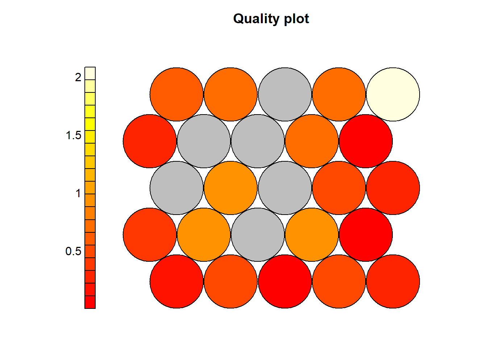
4.5.2 JACCARD
The Jaccard index compares whether pairs of observations are placed together in two clusterings.
Let:
- \(M_{11}\) be the number of pairs placed together in both clusterings;
- \(M_{10}\) be the number of pairs placed together in the first clustering but not the second;
- \(M_{01}\) be the number of pairs placed together in the second clustering but not the first.
Then
\[ J=\frac{M_{11}}{M_{11}+M_{10}+M_{01}}. \]
A larger Jaccard value indicates greater cluster stability or agreement.
4.5.2.1 Manual
source("C:/Users/01438475/OneDrive - University of Cape Town/UCTcourses/Honours/Analytics/UnsupervisedLearning/Cluster/crimestats/jaccard_calc.R")
set.seed(123)
km2 <- kmeans(data, 2, nstart = 50)
manual_jaccard(km2$cluster, kmeans.btstrp.clusters)## [1] 0.4682081# Bootstrap stability
set.seed(123)
B <- 20
jaccard_vals <- numeric(B)
n <- nrow(data)
for (b in 1:B) {
idx <- sample(1:n, replace = TRUE)
km1 <- kmeans(data, 2, nstart = 10)
km2 <- kmeans(data[idx, ], 2, nstart = 10)
common <- intersect(1:n, idx)
jaccard_vals[b] <- manual_jaccard(
km1$cluster[common],
km2$cluster[match(common, idx)]
)
}
mean(jaccard_vals)## [1] 0.80925954.5.2.2 Using R function
library(fpc)
set.seed(123)
out <- clusterboot(
data,
B = 100,
clustermethod = kmeansCBI,
krange = 2,
seed = 123
)## boot 1
## boot 2
## boot 3
## boot 4
## boot 5
## boot 6
## boot 7
## boot 8
## boot 9
## boot 10
## boot 11
## boot 12
## boot 13
## boot 14
## boot 15
## boot 16
## boot 17
## boot 18
## boot 19
## boot 20
## boot 21
## boot 22
## boot 23
## boot 24
## boot 25
## boot 26
## boot 27
## boot 28
## boot 29
## boot 30
## boot 31
## boot 32
## boot 33
## boot 34
## boot 35
## boot 36
## boot 37
## boot 38
## boot 39
## boot 40
## boot 41
## boot 42
## boot 43
## boot 44
## boot 45
## boot 46
## boot 47
## boot 48
## boot 49
## boot 50
## boot 51
## boot 52
## boot 53
## boot 54
## boot 55
## boot 56
## boot 57
## boot 58
## boot 59
## boot 60
## boot 61
## boot 62
## boot 63
## boot 64
## boot 65
## boot 66
## boot 67
## boot 68
## boot 69
## boot 70
## boot 71
## boot 72
## boot 73
## boot 74
## boot 75
## boot 76
## boot 77
## boot 78
## boot 79
## boot 80
## boot 81
## boot 82
## boot 83
## boot 84
## boot 85
## boot 86
## boot 87
## boot 88
## boot 89
## boot 90
## boot 91
## boot 92
## boot 93
## boot 94
## boot 95
## boot 96
## boot 97
## boot 98
## boot 99
## boot 100## [1] 0.9355853 0.83274974.6 Using a consensus measure to choose the number of clusters
NbClust combines many different internal validation indices. Each index recommends a number of clusters, and the final choice is based on a voting rule.
If index \(m\) recommends \(K_m\), then the consensus choice is
\[ K^*=\arg\max_K \sum_{m=1}^{M} I(K_m=K), \]
where \(I(\cdot)\) is an indicator function.
Consensus methods are useful because no single index is universally best. However, the final choice should still be interpreted in light of the data context and substantive meaning of the clusters. Using the NbClust package which uses a vote to choose the number of clusters. The following example determine the number of clusters using all statistics:
res.nb <- NbClust(data, distance = "euclidean",min.nc = 2, max.nc
= 10, method = "complete", index ="all")
## *** : The Hubert index is a graphical method of determining the number of clusters.
## In the plot of Hubert index, we seek a significant knee that corresponds to a
## significant increase of the value of the measure i.e the significant peak in Hubert
## index second differences plot.
## 
## *** : The D index is a graphical method of determining the number of clusters.
## In the plot of D index, we seek a significant knee (the significant peak in Dindex
## second differences plot) that corresponds to a significant increase of the value of
## the measure.
##
## *******************************************************************
## * Among all indices:
## * 6 proposed 2 as the best number of clusters
## * 7 proposed 3 as the best number of clusters
## * 5 proposed 4 as the best number of clusters
## * 1 proposed 5 as the best number of clusters
## * 1 proposed 6 as the best number of clusters
## * 3 proposed 9 as the best number of clusters
## * 1 proposed 10 as the best number of clusters
##
## ***** Conclusion *****
##
## * According to the majority rule, the best number of clusters is 3
##
##
## *******************************************************************When all statistics in the NbClust package are allowed to vote, the majority (in this case 7 out of 24) propose that the ‘optimal’ number of clusters should be 3.
4.7 Final lecture summary
The main conceptual comparison across the methods is:
| Method | Main idea | Strength | Limitation |
|---|---|---|---|
| K-means | Minimise within-cluster variance | Simple and interpretable | Sensitive to scaling and outliers |
| DBSCAN | Find dense regions | Finds noise and irregular shapes | Sensitive to eps and MinPts |
| PAM / k-medoids | Use real observations as centres | More robust than k-means | More computationally expensive |
| CLARA | Sample-based k-medoids | Scales PAM to larger datasets | Depends on samples |
| Hierarchical | Build nested cluster structure | Dendrogram is interpretable | No single automatic best cut |
A good cluster analysis should combine:
- careful variable construction;
- standardisation;
- more than one clustering algorithm;
- internal validation;
- stability assessment;
- substantive interpretation of cluster profiles.
4.9 Cluster 1: High-Intensity Violent Crime Areas
Characteristics: - High: - Murder - Attempted murder - Assault (GBH) - Moderate: - Robbery - Lower: - Property-related crimes
Interpretation: - Likely high social vulnerability areas - Possible links to: - Dense population - Socioeconomic stress - Informal settlements
Policy implication: - Targeted violence prevention - Increased visible policing - Social interventions (youth, employment)
4.10 Cluster 2: Mixed / Transitional Crime Areas
Characteristics: - Moderate across most crime types - No dominant crime category
Interpretation: - “Middle ground” areas - Possibly: - Transitional neighbourhoods - Mixed land use
Policy implication: - Balanced policing strategy - Early intervention to prevent escalation
4.11 Cluster 3 (if K = 3): Property & Opportunistic Crime Areas
Characteristics: - Higher: - Robbery - Common assault - Lower: - Murder / serious violent crime
Interpretation: - Likely: - Commercial zones - Transport hubs - Tourist areas
Policy implication: - Focus on: - Surveillance - Urban design (lighting, visibility) - Theft prevention strategies
4.12 Spatial Insight
- Clusters are not random
- Spatial grouping suggests underlying structure
\[ \text{Crime} = f(\text{space}, \text{socioeconomics}, \text{mobility}) \]
4.13 Important Teaching Point
Clusters are descriptive, not causal
- They summarise patterns
- They do not explain why patterns occur
4.14 Key Takeaway
- Clustering helps us:
- Reduce complexity
- Identify types of crime environments
- Inform targeted policy
- Reduce complexity
4.15 In-class Discussion
## assault_per100k attempted_murder_per100k common_assault_per100k
## 1 68.61626 19.16964 196.9548
## 2 312.53703 72.22646 676.7743
## common_robbery_per100k murder_per100k robbery_per100k sexual_offences_per100k
## 1 64.82612 15.8700 95.21795 30.45958
## 2 232.25331 108.1782 441.52001 121.54682Question for students:
Which cluster would you prioritise for policing resources — and why?